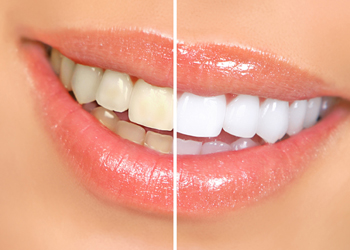

Teeth Whitening in El Paso
Tooth whitening ("bleaching") remains the most requested cosmetic dental service, according to America Academy of Cosmetic Dentistry. Under the supervision of a dentist, tooth whitening is perhaps the safest cosmetic procedure.
Zoom!® Laser Teeth Whitening
Zoom! Whitening lightens tooth enamel and dentin using a bleaching process. The entire in-office procedure takes about ONE hour.
Hydrogen peroxide, the bleaching agent in the Zoom! whitening gel, is activated by laser. As the light breaks down the hydrogen peroxide, oxygen enters your enamel and dentin, bleaching any colored substances while leaving the rest of the tooth unchanged.
If you follow the simple, post-whitening care instructions, your teeth should remain whiter than your original color for some time to come. Proper follow-up care includes daily flossing, twice-daily brushing and occasional touch-ups with Zoom! Weekender or Nite White gel.
You may experience some sensitivity during the Zoom! treatment, although the warmth of the laser light should alleviate any discomfort.
If your gums tend to be sensitive, you might ask your dentist for anti-sensitivity toothpaste, to be used prior to treatment.
- Takes less than an hour to complete
- Uses a bleaching hydrogen peroxide gel, which is activated by a laser